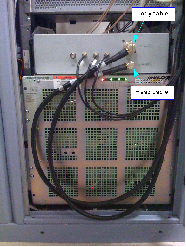

| NOTE: | Connecting the Head output to the
1.5T Dummy Load requires the use of a 7/16 inch to HN adapter. This
adapter is available in the 3T RF Power Measurement Kit. If the adapter is not available, you can connect the Dummy Load to connector J4 on the rear of the RF Amplifier. To access this connector, you will need to slide the RF Amplifier out of the PGR cabinet. |
| NOTE: | If the 35kW RF Dummy Load is used, make sure its fan is running. |
Illustration 3: Body and Head Output Cables from RF Amplifier
